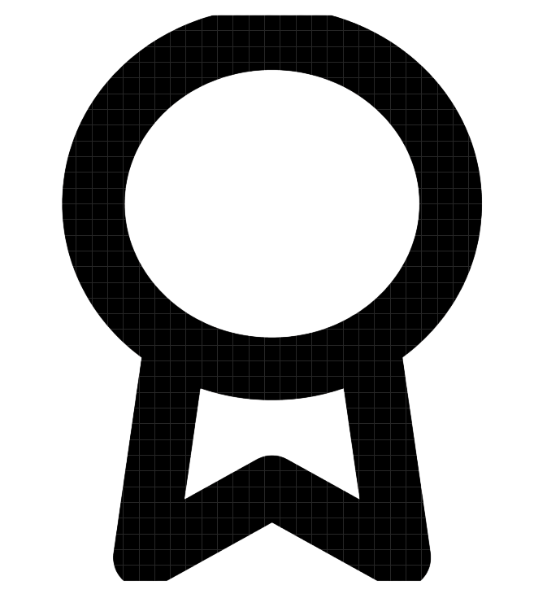

ONGOING
70%
Mathematics
Due on 9th July 2025
Chemistry
Due on 11th July 2025
INCOMING
Mathematics Extra Exercise
Open on 12th July 2025
English Essay
Open on 30th July 2025

COMPLETED
Biology Lab Prep
Finished on 5th July 2025
Chemistry Quiz
Finished on 4th July 2025
OVERDUE
English Essay
Due on 4th July 2025
Biology Revision
Due on 2nd July 2025